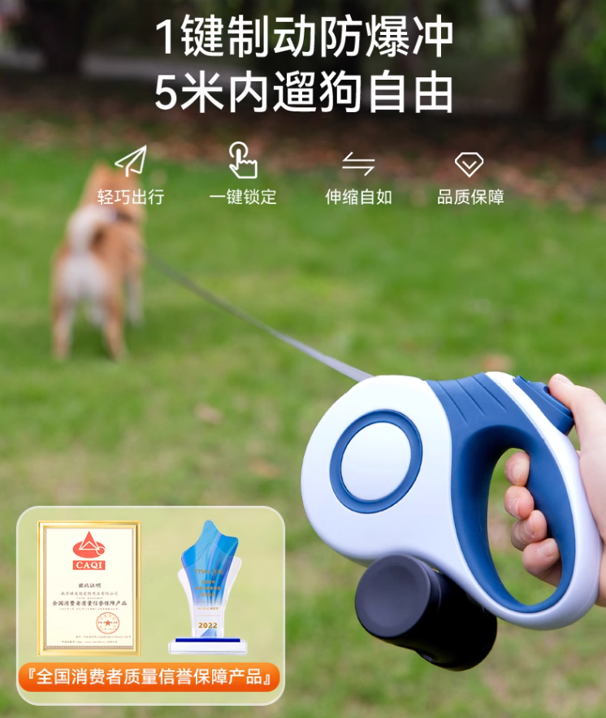
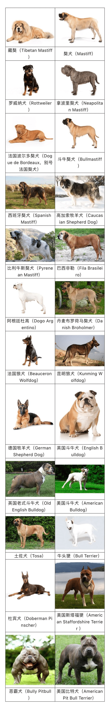

有感于四川崇州 2 岁小女孩被狗咬，伤重住院，以后再碰到不文明养犬的马上举报，让其付出被罚 2000 元的代价
你好，今天聊一下安全文明养犬的事。
大概北京时间 16 日早上 8 点多，在四川崇州发生了一起黑狗袭人事件。
上面有视频，你可以看一下。我看了之后，非常气愤。妈妈带着两岁多的女儿从居民楼里出来，一条黑犬——确切地说是一条罗威纳犬在楼下已等候多时。
见母女二人出来了，黑犬上去就咬，并且专挑人类幼小袭击。不要质疑妈妈保护儿女的决心和勇气，如果你看了视频就会发现，母亲在手无寸铁的情况下，已经在想方设法尽自己最大的努力保护女儿。我相信，妈妈当时的想法是：“狗你有种冲我来，不要伤害我女儿！”
短短两分钟，悲剧就发生了。事后经医院检查，小女孩周身有 20 余处伤口，最长的一处竟然有 8 公分长。8 公分什么概念，那相当于一个成年男子中指的长度。
经医院抢救，小女孩终于脱离生命危险了。若不是周围刚好有一个持墩布打扫卫生的大妈，及时加入保护人类幼崽的战斗，用拖把逼退黑狗，后果可能更加严重。

我看过视频，震惊坏了！
这烈性犬袭人，毫无征兆，且似乎又毫无理由。视频中那条黑狗就像与小女孩有数世仇怨一样，上来就干，且完全忽视了成人妈妈的在场。
我是今天在报纸上看到这则报道，然后在网上查视频观看的。看视频之前我很好奇，在有成人监护的情况下，小孩怎么可能被恶犬伤害得那么严重。
看过视频之后，我不再有任何怀疑了。换作其他任何一位妈妈，或者奶奶，都有可能发生类似的不幸。
重点是，如何防范？
报纸上给出的建议更加让我吃惊！
那篇报道的作者说，当我们在户外遇到烈性犬时，要注意躲着它走。
这里插一句，什么是烈性犬？有些读者可能不了解它的定义，在北京身高 35 厘米以上就是烈性犬。35 厘米大概就是一尺的距离。
现代狗主人一般会给狗束一条伸缩绳，这种绳子在狗跑远时可以自动伸长，狗离得近时又可以自动伸缩，着实很方便。
这不等于没拴绳嘛？！
但不能不拴！我查了一下，北京自 2016 年就出台文明养犬条例，带狗外出遛弯必须束绳，被发现不拴绳将可能被处以 2000 元罚款。
但是狗拴了绳就不舒服，狗不舒服，狗主人可能也不舒服，一是心里不舒服，二是手里始终拽根绳子不舒服。
于是有聪明的商家，设计了一种伸缩狗绳，既没有违反城市管理条例，又让狗和狗主人都舒服了一些，自己还赚了钱。
商家真聪明也！

下面继续说报纸上这位作者给出的建议，他说，在室外如果遇到这种拽着伸缩绳遛狗的女士或男士，以及压根不肯给狗拴绳的，要注意避让。
如果狗在狗主人左侧，我们就从狗主人的右侧通过；如果狗在狗主人右侧，我们就从狗主人的左侧通过。将狗主人当作我们与狗的安全隔离物，最大保障我们安全通过。
这位报刊作者好聪明啊！
请问，我们为什么不能立法禁止养狗人使用伸缩绳？
甚至对出售伸缩绳的商家及其商品，为什么不能取缔、没收？就那样一条 5 米内可以自由伸缩的绳子，让法规上的外出遛狗必须束绳的条文，还有什么存在的尊严可言？
用伸缩绳与不用绳子，有何区别？
更有甚者，有的养狗人压根不给狗束绳子，理由大概就是“他家的狗温顺、不咬人”。
关于烈性犬的定义，并没有温顺不温顺这一条，只有身高规定一说。
条例规定，凡是超过 35 厘米的，就是烈性犬。尤其是国民爱养的外国品种，例如獒犬、德国杜宾犬、圣伯纳犬、罗威纳犬、阿富汗猎犬、灵缇、苏俄牧羊犬、英国斗牛犬、松狮犬、斑点犬、秋田犬、贝林登梗等均属于禁养的烈性犬范畴。
任何市民，凡是发现有人在公共场所遛狗，或在马路边不拴绳遛狗，无论在哪里，狗的身高超过 35 厘米的，都可以拨打城管电话 96310、110 或当地派出所电话进行举报。
管理条例规定，养犬人严禁携犬进入市场、商店、商业街区、饭店、公园、公共绿地、学校、医院、展览馆、影剧院、体育场馆、社区公共健身场所、游乐场、候车室、风景游览区等公共场所。
公园、公共绿地是严禁遛狗的，违者罚款 2000 元。对于没有及时办狗证，及给狗接种狂犬疫苗的，将狗没收，再处以罚款。
我们周围的养狗人有几人真正懂法守法了？
很多人都是带着狗在公园、绿道上散步遛弯，并且还是 35 厘米以上的大型犬，当有小孩、孕妇或老人被吓到时，他们还会及时出声解释：“没事，没事，我家狗不咬人！”
说到狗咬人，什么样的狗会咬人？
文章中指出，有两种狗最可能无缘无故突然袭击人：
1）狗的血缘父亲曾经袭击过人，这是遗传的；
2）狗小时候被主人虐待过，对人有憎恨情绪，或这只狗它自己曾经咬过人。
针对第一种情况，避免伤害的唯一建议就是不要随便收养流浪狗及来路不明的狗。一时的好心泛滥，可能会害了自己或周围邻居。
针对第二种情况，作者疾呼，养狗就要爱狗，如果没有足够的心智负担狗的正常养护，请主动拨打动物收养站电话，给狗一个寻找新生活的机会。
狗存在袭击人的可能，但并不是在所有场合下都会爆发，也并不会针对所有人袭击。
报刊作者指出，狗，非常具有“狗仗人势、欺软怕硬”的奴性。
在视频中，黑狗为什么不袭击妈妈和清洁工，为什么单单袭击小女孩？
因为黑狗在小女孩的身上感受到了她的恐惧，因为小女孩怕它！
面对害怕自己的弱者，黑狗是疯一样的，完全不顾被炖掉的危险上去撕咬。
这就是狗的奴性！
为什么影视剧中形容婢膝奴颜的人总是用“狗奴才”，这是有一定道理的。
报刊作者指出，面对欺软怕硬的狗，千万不要恐惧，心中要升起一种把它狗脑子打出来的怒意，它如果敢对视你，你就在周围找砖头、木棍等一切可以利用的武器。
如果实在找不到，就脱下自己的鞋子，甚至将自己的手机当作武器，狠狠地砸出去！
砸中砸不中不要紧，气势上绝对不能输！气势输了，让它感受到你的怯意了，它就会变本加厉。在人类生活的都市中，又不是荒郊野外，岂能给畜生张狂的机会！
如果来不及脱鞋，或者手被狗咬住了，这时候一定要沉着冷静，疼痛是疼痛的，但一时半会死不了，要咬紧牙关，想办法拼命勒住狗的脖子，当狗感到窒息的时候，它自然就会松开口。
同时要注意观察，狗有两种状态：
1）一种是被我们的祖先驯化的服帖的温顺的放松的状态，在这种状态下，它的耳朵有时像兔子一样竖起、有时像瘪白菜耷拉在脑袋上，它的嘴巴是张开的，舌头和嘴巴周围的括约肌是松弛的，这种状态一向是它向人类乞食的样子；
2）另一种就是紧张的“飞机耳”状态，两只耳朵像飞机一样平平展开，呰牙咧嘴，舌头伸了回去，甚至在舔自己的嘴唇，这是一种紧张的、兽性大发的状态。
对于第二种状态，它大概是吃饱了，忘记人类祖先是如何驯它的啦！
说到这里，我们怎么能不佩服我们的祖先，对于野狗这种畜生，先是饿它，饿得它头晕眼昏、没有力气，待它稍微学会第一种状态，就给它一点吃的，等它第二种状态复萌，又把它关起来继续饿它。
对于拒不服从驯化的，就打，一直打，打到它恐惧，然后再饿它。一直不服从驯化的，就炖了，当着它同伴的面吃肉。久而久之，只有学会听话的狗被自然选择保留了下来，并且允许他们繁衍子嗣。
人类在进化早期，不知道受了草原上的野狗多少气，以至于万年以后人类幼崽在面向大型犬时仍会自然而然生出恐惧，这种恐惧是带在基因里的。
要不说人类祖先的训化师厉害，他们不但自己克服了对野狗的恐惧，还将狗对人类的恐惧，深深地钉在了它的基因里。
所以，面对狗，无论是饲养，还是避险，第一是不要恐惧，第二是控制它的恐惧。
农村人养狗，养中华田园犬，不是所有的狗都听话，偶尔也有不听话的，例如敢从主人或小主人手里抢东西吃，养狗人就打，往死里打。饿它一天，第二天再打。第三天看它表现，才给些吃的。这叫给它长记性。
身为狗，只能吃主人扔在地上的食物，主人手里的食物或桌上的食物，主人不给，绝对不能吃。
至于敢咬人的狗，那叫脏口了，不能留了。见过血的狗，藏在它体内的兽性被激发了，再也不能留，养狗人再不舍得也会毫不犹豫将它杀了，心软的则会卖给狗肉馆处理。
这种驯狗技巧，在农村是世代相传的，没想到现在城里兴起养洋狗以后，这种技能反而失传了。
有的养狗人对狗那是一个溺爱，把狗当儿子养，在家抱着睡，出门抱着走，你敢踹一脚她的大名贵犬，她能跟你不死不休。
她的狗怎么能受半点委屈！你敢打她的狗，就如同打她的脸！
至于遛狗拴绳，不可能，根本不可能，在人多的公共场合，也顶多挂个伸缩绳做个样子。
甚至直接放开散养，让爱狗自由活动。
等到有一天，突然，警察上门告诉她：“你家的狗将别人家的小女孩咬了！”她就傻了。
这时候，再不明智的她也老实了。不但她要赔偿被害人所有医疗费及营养费、精神损失费，她的爱狗也不能留了。脏了口的狗，只能杀掉；即使还给她，她自己都不敢养。
谁能保证一个脏了口的畜生，半夜不会把她的脖子咬断，或伤害她家里儿子或孙子。
好了，最后回顾一下。
作为一名爱狗人士，为了和谐社会大家的共同安全，提出如下安全文明养狗倡议：
1）出门遛狗必拴绳，且一直拴绳，并且不是那种伸缩绳。其他人碰到使用伸缩绳的，被迫被逼到路的一边甚至逼到草地上通过的，且忍他一忍。
他总有把狗绳解了让狗方便的时候，马上拍下照片，打 96310 或 110 举报，让他付出 2000 元的代价。
如果他不解狗绳，他也会带狗遛到公共绿地、公园、广场等公共场所，这是城管条例不允许的，马上拍下照片，举报他。
2）一家只准养一条狗。对于同时牵两条狗，并且使用的都是伸缩绳的，一左一右横扫绿道，让行人避无可避的，拍下照片，举报它，让他付出被没收一条狗并被处以 2000 元罚款的代价。
3）对于豢养身高超过 35 厘米以上大型犬的养狗人，特别当他的狗吓哭小孩了，让带孩子的奶奶或妈妈手足无措时，他还在那里解释：“没事没事，我家狗不咬人！”。
拍下照片，马上打电话举报他。
相关管理单位对烈性犬的定义，对于烈不烈这个词并没有标准的定义，什么是烈？咬人了伤人了肯定是烈，前面我们分析狗咬人的原因时说了，狗的烈性是写在基因里的，任何一条狗都有兽性大发的可能。
相关单位对烈性犬的定义，只有一条，就是狗的身高，凡是体型身高超过 35 厘米的就属于大型犬、烈性犬。劝告喜欢养殖外国名贵大犬的养狗人，再名贵的狗，也是狗，身高超过 35，就是大型犬、烈性犬。
人类幼崽对大型犬的恐惧，像对蛇的恐惧一样，是写在基因里的。对于这样的养狗人，也是直接拍下照片，打电话举报他，让他付出狗子被没收并被处以 2000 元罚款的代价。
4）对于只在自家院里或屋里养大型犬的养狗人，笔者特意提醒，养狗不要忘记人类祖先驯狗的优良传统。你越是对狗溺爱，对它没有界线，几代以后，它可能真的就兽性复发了。
养狗，只有训，像祖先一样恩威并施，才能一直拥有一条安全、忠诚的狗。
最后，贴一张北上广杭明确被官方认定为大型犬、烈性犬的名单。

不在列的，并非不在管理范围之内，因为在条例上有一个等字，凡是体形身高超过 35 厘米的，都算。只是上面这些，即使身高不超过 35 厘米，例如恶霸犬，也属于烈性犬。
啰唆了这么多，无非是想养狗人与非养狗人有一个和谐安全的环境，不再发生类似的悲剧。真正在危险的时刻，什么举报，城管，110 等都是来不及的，能依靠的只有自己。
关键就是要有勇气，不要胆怯，还有就是尽量避让，避免激发大型犬的兽性。
我突然明白那位报刊作者的用意了！人家可不是尽是给一些“怂”的建议，那些建议都很实际，是每个人自己在危险时刻都能够抓住的稻草。
我则对当下城市里像儿子一般溺爱式养犬有了一丝担忧，人与狗的界线如果一再被打破，狗回归未驯化的畜生也只是一个时间问题。
还是老辈农村人养中华田园犬的方式最聪明！
同时我也不觉得中华田园犬就比上述所列的洋犬差在哪里，实在没有必要饲养洋货，尤其是罗威纳犬。一切的根源都是民族自信力不足，与养狗人的虚荣心在作祟。
大概觉得养一条中华田园犬不够威风，突显不了自己显赫的社会地位，或者彰显不了自己伟岸的身躯与漂亮的容颜，大概只有几万、几十万甚至上百万的名贵犬种才能完成这种装逼的宿命。
和欧洲人不爱买驴包，驴包反而在大陆卖得最好一样，这是一种风气，一种病态的风气。
要彻底改变这种风气，当路上遇到狗主人时，尤其是带着孩子遇到时，不是当面夸赞他的狗多漂亮多名贵，而是主动问他：“你这狗是什么品种？”
“罗威纳犬？！”
“噢，属于大型烈犬。”
“喂，96310城管中心吗？我举报，这里有人养烈性犬！”

评论